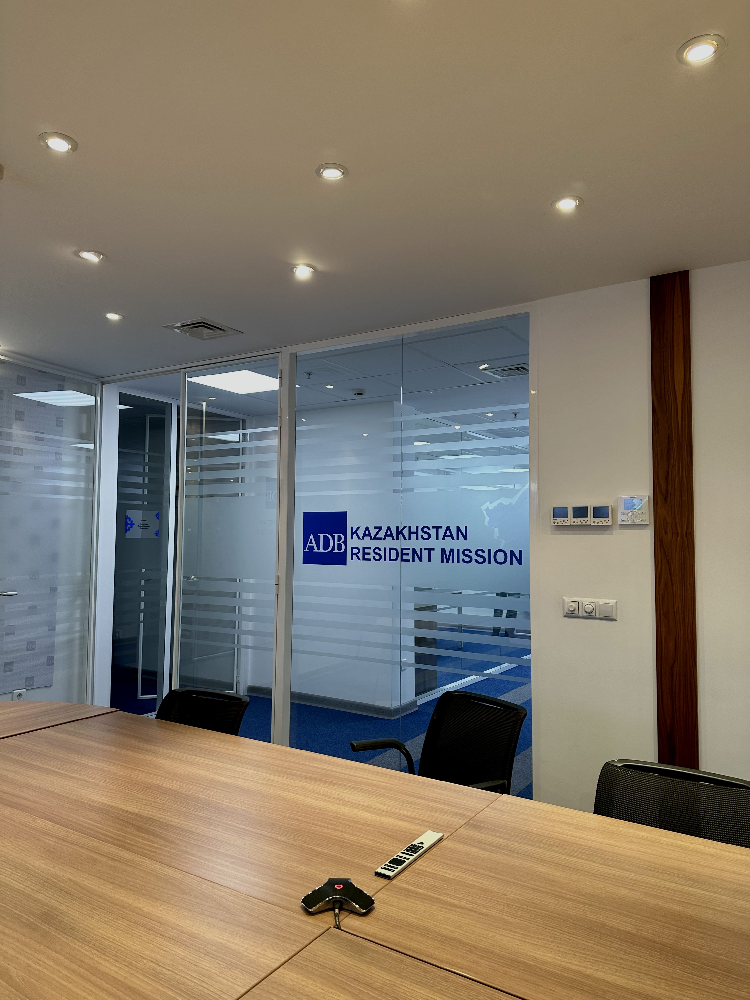
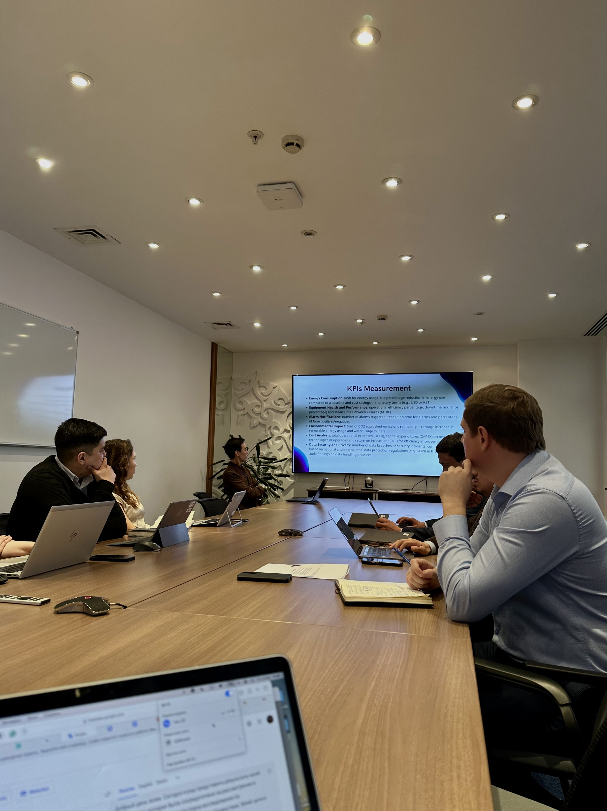

Sustainability and Renewable Energy Sources
Due to Kazakhstan’s remote position from all big sources of water and proximity to water-conflicting states like Tajikistan and Kyrgyzstan, our country is highly vulnerable to climate change consequences. This is why sustainability is my biggest professional interest at the moment.
My primary goal is to work closely with oil & gas companies in the ESG (Environmental, Social, and Governance) sphere to promote renewable energy sources (RES) implementation. I recently completed a policy memo addressed to Kazakhstan’s Ministry of Energy, focusing on the challenges and opportunities of integrating RES into the country's energy sector. Download the memo here.

